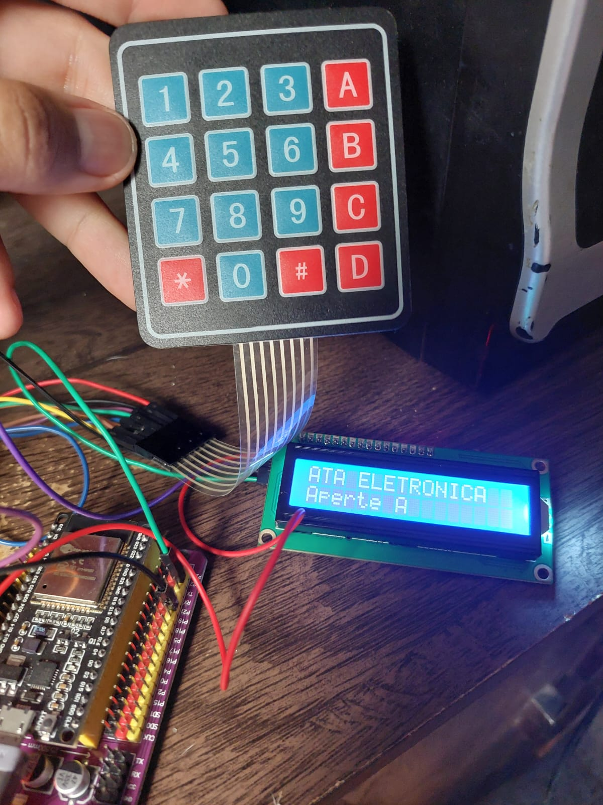

ATA Eletrônica: O Fim das Listas de Chamada em Papel
Um sistema embarcado desenvolvido para modernizar e automatizar o registro de frequência acadêmica. O dispositivo opera através de uma Máquina de Estados Finitos (FSM) robusta, garantindo segurança e agilidade.

Funcionamento: O professor autentica-se e configura a sessão. O aluno digita sua matrícula, o sistema valida no banco local e confirma a presença visualmente. Ao final, o ESP32 compila os dados e envia um relatório .CSV formatado automaticamente por e-mail via Wi-Fi.
Hardware & Tech:
ESP32 DevKit V1, Teclado 4x4, LCD 16x2 I2C, LittleFS (Flash), SMTP/SSL (Email).